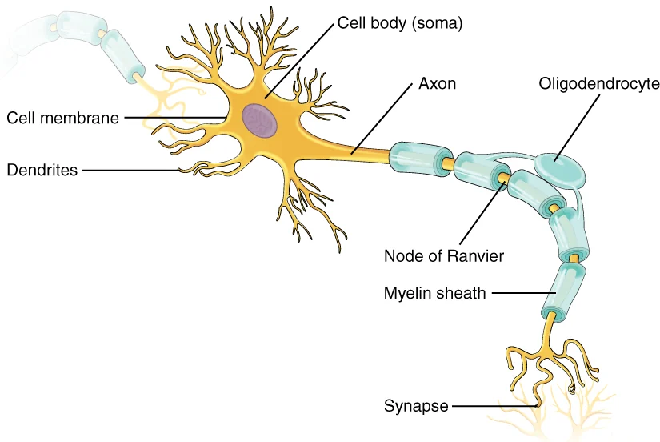
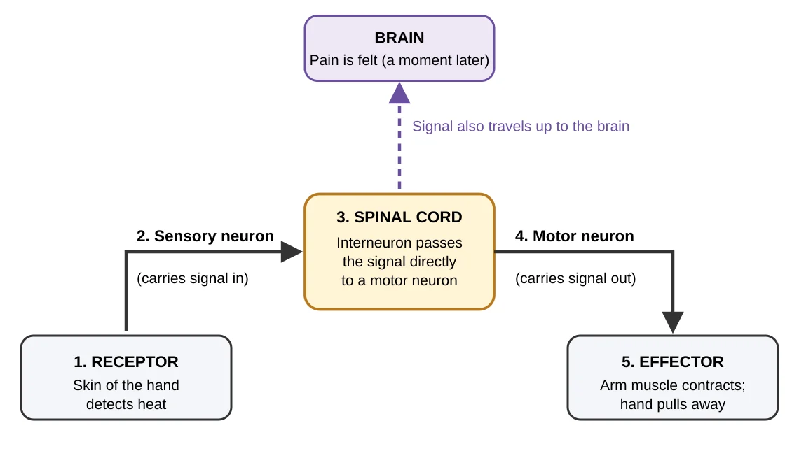

The Nervous System
TEAS objective S.1.5 · Human Anatomy & Physiology
What the TEAS expects: you can name the divisions of the nervous system, label the parts of a neuron and say which way signals travel, describe a reflex, compare sympathetic and parasympathetic effects, and match major brain regions to their jobs.
1. How the system is organized
- Central nervous system (CNS): brain and spinal cord. It processes information and makes decisions.
- Peripheral nervous system (PNS): all the nerves outside the CNS. It carries information in and out.
- Sensory (afferent) neurons carry signals in to the CNS.
- Motor (efferent) neurons carry signals out to muscles and glands.
- Somatic motor division: voluntary control of skeletal muscle.
- Autonomic motor division: involuntary control of heart, smooth muscle and glands. It has two branches, sympathetic and parasympathetic.
Memory aid: Afferent Arrives; Efferent Exits.
The brain and spinal cord are protected by bone, three membranes (the meninges) and cerebrospinal fluid. The spinal cord carries signals between the brain and body and handles simple reflexes.
2. The neuron
A neuron has three main parts, and signals move through them in one direction:
- Dendrites receive signals from other cells.
- The cell body (soma) holds the nucleus and integrates the signals.
- The axon carries the signal away from the cell body to the axon terminals, which release neurotransmitters across a synapse to the next cell.
Myelin, a fatty wrapping around many axons, insulates them and makes signals travel much faster. Signals jump between the gaps in the myelin (nodes of Ranvier). Myelin is made by Schwann cells in the PNS and oligodendrocytes in the CNS. Neurons are supported by glial cells (neuroglia), which do not carry signals themselves.
The signal along the axon is an action potential: sodium (Na⁺) rushes into the cell (depolarization), then potassium (K⁺) flows out (repolarization). At the synapse the signal becomes chemical (neurotransmitter).

Tap or click the figure to open it full size.
Check 1: A drug blocks the release of neurotransmitter. At which part of the neuron does it act? Answer at the bottom of the page.
3. Reflexes
A reflex is a fast, automatic response that does not wait for conscious thought. A reflex arc has five parts: receptor → sensory neuron → integration center (often an interneuron in the spinal cord) → motor neuron → effector (muscle or gland).

Tap or click the figure to open it full size.
4. Sympathetic versus parasympathetic
The two autonomic branches usually have opposite effects on the same organ.
Swipe the table sideways to see every column. →
| Sympathetic ("fight or flight") | Parasympathetic ("rest and digest") | |
|---|---|---|
| Heart rate | Increases | Decreases |
| Airways (bronchioles) | Dilate | Constrict |
| Pupils | Dilate | Constrict |
| Digestion | Slows | Speeds up |
| Blood glucose | Rises (liver releases glucose) | Favors storage (stimulates insulin release) |
| Main neurotransmitter at the target | Norepinephrine (mostly) | Acetylcholine |
Why it makes sense: in an emergency you want more oxygen and fuel to muscles and wider pupils to see; digestion can wait.
Check 2: After a big meal you feel relaxed and your stomach is churning. Which branch is dominant? Answer at the bottom.
5. Major brain regions
| Region | Main jobs |
|---|---|
| Cerebrum (cerebral cortex) | Conscious thought, memory, language, voluntary movement, interpreting sensations |
| Cerebellum | Balance, coordination, smooth and practiced movement |
| Brainstem (midbrain, pons, medulla oblongata) | Basic life functions: breathing, heart rate, blood pressure, swallowing |
| Hypothalamus | Body temperature, hunger and thirst, controls the pituitary gland |
| Thalamus | Relay station that routes sensory signals to the cortex |
The cerebrum's lobes: frontal (planning, personality, voluntary movement), parietal (touch and body sensations), temporal (hearing, memory), occipital (vision).
Common traps
- Reversing dendrites and axon. Dendrites receive; the axon sends.
- Thinking reflexes are processed in the brain. Many simple reflexes are handled in the spinal cord.
- Mixing up afferent and efferent. Afferent = sensory, in; efferent = motor, out.
- Mixing up cerebrum and cerebellum. Cerebellum = balance and coordination.
- Assuming sympathetic always means "increase." It slows digestion, for example.
Learn it properly
- Organization of the system: OpenStax Anatomy and Physiology 2e, Section 12.1 Basic Structure and Function of the Nervous System: OpenStax (opens in a new tab)
- Neurons and glia: Section 12.2 Nervous Tissue: OpenStax (opens in a new tab)
- Sympathetic and parasympathetic: Section 15.1 Divisions of the Autonomic Nervous System: OpenStax (opens in a new tab)
Check answers
- The axon terminals, which release neurotransmitter into the synapse.
- Parasympathetic ("rest and digest").
ESCC TEAS Prep · Original study material written for Eastern Shore Community College. Figures from OpenStax, Anatomy and Physiology 2e, licensed CC BY 4.0, and an original diagram.